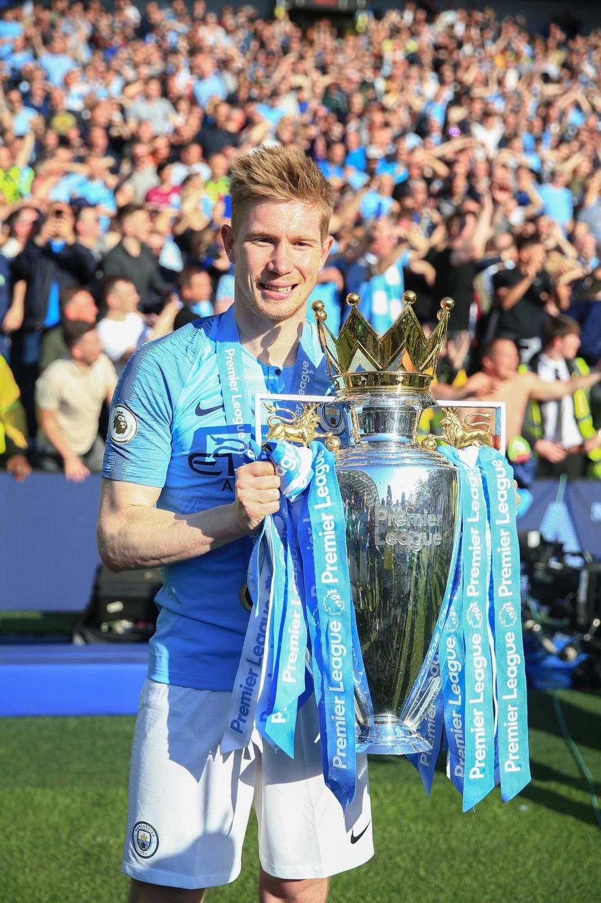

In 2008, his hard-work finally paid off and he was selected for the first team squad in Genk and made his
debut in May 2009. However, he was only able to establish himself in the team by the next year. The 2010-11
season turned out to be lucky one for Genk as they were crowned with the Belgian Championship. In all the 32
games that he played in the league, Kevin scored five goals and 16 assists.
In October 2011, Kevin scored his first hat-trick for Genk in a match winning performance against Club
Brugge. He finished the league with 8 goals that he scored in 28 matches. By February 2012, English club
Chelsea had decided to bring Kevin in their team and Kevin made his debut for them in July 2012.
In August 2012, Chelsea made the official announcement regarding the temporary transfer of Kevin to the
German team Werder Bremen ahead of the Bundesliga. His competitive performance in Bundesliga justified his
loaning perfectly and in July 2013, Kevin made a comeback to the official Chelsea line-up.
In a friendly game against Malaysia just ahead of the 2013-14 season, Kevin injured his knee while scoring a
goal. He was however fit before he made his competitive debut in the premier league against Hull City. In
the game that Chelsea won, Kevin assisted in scoring of the first goal for his team.
Following his sub-par performance for Chelsea, the team decided to let him go in January 2014 to Wolfsburg.
In the 2014-15 Europa League, he performed excellently and caught all the right attentions. In the third
group stage match, he scored two goals against Krasnodar and in the next game against Bayern Munich, he
further ensured his team’s victory by scoring another goal.
Kevin ended the league season with 10 goals and 21 assists and his team ended up as the first runner up by
the end of the league. This had them qualifying pretty easily for the 2014-15 UEFA Champions League. Ending
his debut season for Wolfsburg with 16 goals in total, he was named the Footballer of the Year in Germany.
His 21 assists in the league was a new record.
It was reported in early 2015 that English club Manchester City was closely following Kevin and approached
him twice before he finally accepted their offer in August 2015. Towards the end of August, official
announcement was made by Manchester City that they had acquired Kevin for a six years contract. He was
purchased for an amount of 55 million pounds, making him the second costliest purchase by any English club.
He scored in almost all his first few games for MC and in October 2015, it was speculated that he was being
considered for a Ballon D’or award. He played a major role in getting his team to the finals of the Football
League Club. But an unfortunate injury in the semi-finals had him taking break from the field for next two
months.
In April 2016, he made a comeback right ahead of the UEFA Champions League and he further scored goals to
lead his team to the semi-finals. This was the first time that Manchester City had reached this far in
Champions League. But his team’s aspirations of winning the league remained unfulfilled.
He was named ‘man of the match’ twice in September 2016 and had a fairly good season.
In January 2018,Manchester City announced that they will be keeping him until 2023 as a new contract had been signed.
As for his international career, it was rumoured that Kevin will be playing in the English national team
given the fact that his mother was an English woman. But he chose Belgium and made his international debut
for Belgium in a friendly match against Finland in 2010. Before his final arrival into the senior team, he
had been a part of many under age teams for his country.
In May 2014, he was announced as one of the very first players to be chosen for the 2014 FIFA World Cup and
in his team’s very first match against Algeria, he was named ‘man of the match’. He was also named in the
national squad for UEFA Euro 2016. His national team performed poorly and was eliminated out in the early
stages itself.